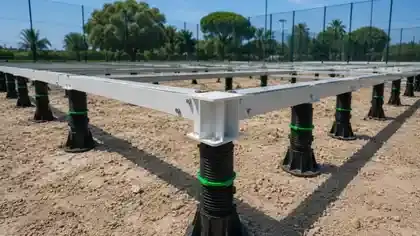

Treat construction as site works plus court supply. This guide covers the full build from feasibility to handover; the Padel Court Installation Guide goes deeper into on-site assembly.
What Padel Court Construction Includes
A padel court project is usually split between a local contractor and a court manufacturer. Confirming that split in writing before the order is the most effective way to avoid gaps in scope, budget and schedule.
| Work package | Typical scope | Usually handled by |
|---|---|---|
| Feasibility & permits | Planning approval, noise, lighting, access and land use | Owner / local consultant |
| Site survey & design | Levels, soil, utilities, layout and court orientation | Local engineer, using the supplier’s drawings |
| Groundworks & drainage | Excavation, sub-base, ducting, drainage and falls | Local civil contractor |
| Foundation or base | Concrete slab and ring beam, modular base or elevated base | Local contractor, or the supplier for a modular system |
| Court system | Steel structure, 12 mm tempered glass, mesh, turf, LED lighting, net and hardware | Court manufacturer |
| Assembly & handover | Structure, glass, turf, lighting, checks and documentation | Local team with supplier guidance, or agreed supplier support |
Space and Height Requirements
The FIP playing area is 20 × 10 m internal (65.6 × 32.8 ft), about 200 m² per court, with at least 6 m of unobstructed clear height; FIP suggests 8 m for new facilities. The playing area is not the land requirement: allow for circulation, delivery and lifting access, drainage, lighting and any roof columns. See Padel Court Dimensions & Site Planning and, for existing buildings, Is 7 m High Enough for Indoor Padel?
Padel Court Construction Steps
The sequence below assumes a fixed court on a new base. Steps 3 and 4 run in parallel: the court is manufactured while groundworks proceed.
| Step | What happens | Checkpoint before moving on |
|---|---|---|
| 1 · Feasibility & permits | Confirm land use, planning, noise and lighting rules, and the number of courts. | An approval path and a realistic court count. |
| 2 · Site survey & layout | Survey levels, soil, utilities and access; fix court positions and orientation. | Layout agreed with the court supplier. |
| 3 · Order the court system | Confirm the model, glass, turf, lighting and wind requirements. | Signed specification; foundation and anchor drawings issued. |
| 4 · Groundworks & drainage | Excavate, build the sub-base, lay lighting ducts and set drainage falls. | Levels and drainage checked against the drawings. |
| 5 · Foundation or base | Pour the slab and ring beam, or set out the modular or elevated base. | Base cured where concrete is used, level, with anchor positions verified. |
| 6 · Delivery & unloading | Receive the containers, check packing lists and store glass safely. | Damage or shortages recorded before assembly. |
| 7 · Steel structure | Anchor and align the structural frame. | Plumb, alignment and connections checked. |
| 8 · Glass & mesh | Install tempered glass panels and mesh with the specified hardware. | Glass edges protected and all fixings complete. |
| 9 · Turf, sand & lines | Lay and join the turf, then spread the infill sand. | Surface flat, joints secure and lines correct. |
| 10 · Lighting & handover | Connect the LED lighting, inspect the court and hand over documentation. | Snag list closed and maintenance notes issued. |
Choosing the Foundation
The base carries the court, sets the playing level and controls water. The three common routes are:
- Concrete slab with ring beam – the permanent standard for fixed outdoor and indoor courts; it needs local civil works and curing time.
- Modular foundation base – reduces wet civil work and suits sites where excavation or curing time is a constraint. See the Modular Foundation Base.
- Elevated foundation – for sloping ground, rooftops or level differences. See the Elevated Padel Court Foundation.
Compare the options in the Concrete vs Modular Foundation Guide. Whichever route you choose, a local engineer should approve the foundation for the actual soil, wind and loading conditions.
Drainage and Surface Levels
Standing water is the most common long-term problem on outdoor courts. FIP’s Rules of Padel allow a maximum transverse slope of 1% from the centre for surfaces without drainage. Plan falls, perimeter drainage and outlets during groundworks rather than after the court is installed. See the Padel Court Drainage Guide.
Outdoor, Covered or Indoor
The construction scope changes with the environment. An outdoor court needs drainage and a wind check; a covered court adds roof columns, foundations and clear-height coordination; an indoor court depends on the building’s height, floor and lighting. Use the High-Wind Padel Court Guide, the Padel Court Roof Guide, the Hot Climate Guide and Indoor vs Outdoor Padel Courts for each case.
Building a Padel Tennis Court in the UK: LTA Guidance
In the UK, the LTA’s Padel Court Construction Guidance Note (2025) is the usual reference for permanent outdoor courts. It is regional guidance, not global law, but UK funders, councils and contractors commonly work from it. Key points for buyers:
- Planning consent: padel courts require formal planning consent from the local authority, and it is usually excluded from contractor quotes. Homes within about 50 m may trigger noise and lighting surveys; greenfield sites must also deliver Biodiversity Net Gain.
- Base: a perimeter reinforced-concrete ring beam with a free-draining aggregate sub-base and two-layer porous asphalt, designed by a UK-qualified structural engineer. The guidance states that a steel-plated or above-ground foundation must not be used for a permanent outdoor court, so check our UK permanent-outdoor note before choosing a modular base for that case.
- Enclosure and glass: rebound ends to 4.0 m, with 3.0 m of glass or solid material and 1.0 m of mesh above; 10 mm toughened glass for indoor and 12 mm for outdoor courts. See the Padel Court Glass Walls Guide.
- Lighting: 300 lux average for recreational and regional play, 500 lux for national competition, with at least 6.0 m clear above the court.
- Contractor and warranty: SAPCA-registered contractors, or experienced padel contractors with a verifiable portfolio; a single main contractor is recommended for a single warranty.
The same guidance publishes historical delivered-project costs, summarised in the cost section below. For UK reference projects, see our covered and outdoor padel club in Stanwell and the portable padel court in Harwich.
Construction Budget: Site Works Matter as Much as the Court
Buyers often compare court prices and underestimate site works. In the historical UK example in our padel court cost guide, one court with lights was listed at GBP 36,000 and the ring beam, base, ducting and drainage at GBP 35,000, almost the same amount. Ask every supplier to state what is included, excluded or provisional, and use the Padel Court RFQ Checklist to compare quotes on the same basis.
Padel Court Builder or Manufacturer?
A padel court builder usually manages local civil works and assembly; a manufacturer designs and produces the court system. Some projects use one turnkey contractor, while others combine a local builder with a direct manufacturer to control cost and specification. Either way, check:
- the steel section, galvanizing and coating specification;
- the glass thickness, tempering and certification basis;
- foundation and anchor drawings issued before groundworks start;
- packing, shipping and installation documentation;
- who is responsible for each work package in the table above.
See How to Choose a Padel Court Manufacturer. SPORTENVO supplies commercial padel court systems from Guangzhou, quoted EXW with shipping via Nansha Port, together with foundation drawings and installation guidance for local teams. Compare systems on the padel courts for sale page.
Common Construction Mistakes
- Pouring the slab before the court supplier’s anchor drawings are confirmed.
- Treating 200 m² of playing area as the land requirement.
- Leaving drainage and lighting ducts until after the base is built.
- Checking wind exposure or clear height only after the court has been ordered.
- Accepting quotes without a clear included / excluded scope.
Padel Court Construction FAQ
How long does padel court construction take?
It depends on permits, groundworks, the foundation type, manufacturing and shipping, and the local team. Concrete bases need curing time, while modular bases reduce wet civil work. Confirm the schedule against the actual project rather than a generic timeline.
What foundation does a padel court need?
A level, drained and engineer-approved base: usually a concrete slab with a ring beam, or a modular or elevated base where the site favours it. Anchor positions must match the court supplier’s drawings.
How much space do I need for one padel court?
The internal playing area is 20 × 10 m (about 200 m²) with at least 6 m of clear height. Add space for circulation, delivery access, drainage, lighting and any roof structure.
Can I build a padel court on an existing tennis court?
Often yes, depending on the condition, levels and drainage of the existing surface and the planned court layout. The existing base must still be checked before the court is anchored.
Is padel tennis court construction different from padel court construction?
No. Padel tennis is a common UK and US name for padel. The court is the same 20 × 10 m enclosed court with glass and mesh walls, so the construction process, base and court system are the same.
Who builds a padel court?
Usually a local contractor handles site works and assembly, working with a court manufacturer that supplies the court system, foundation drawings and installation guidance. Some projects use one turnkey contractor for both.
Do I need planning permission for a padel court?
Rules vary by country and site. In the UK, LTA guidance states that padel courts require formal planning consent from the local authority. Noise, lighting, roof structures and land use are common planning issues, so check with the local authority before ordering the court.
Construction duration, cost and labor vary by court model, quantity, site conditions, local contractor and approvals. SPORTENVO confirms these items against the actual project rather than publishing universal figures.